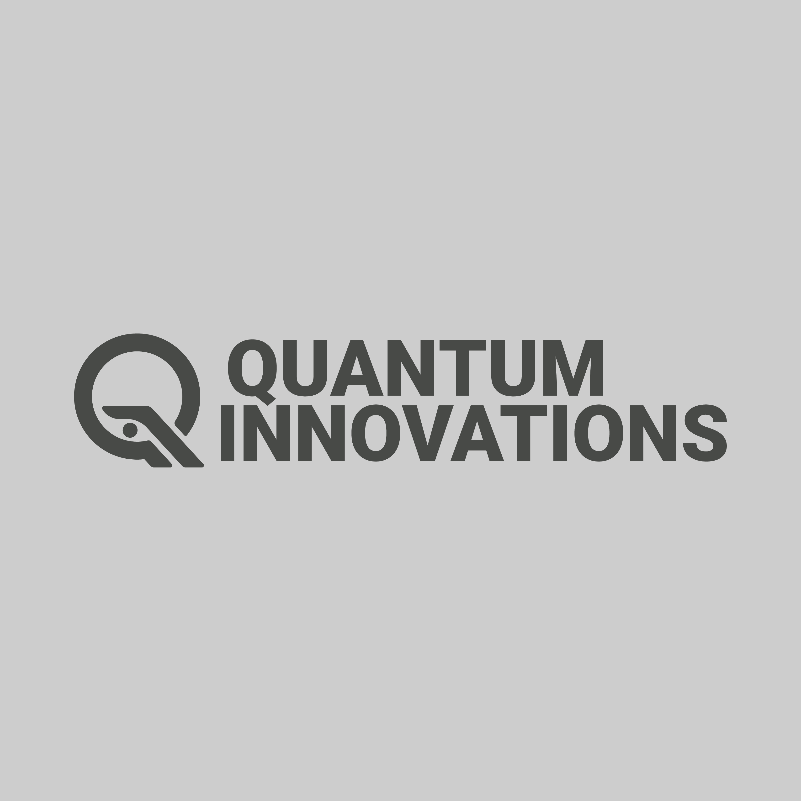
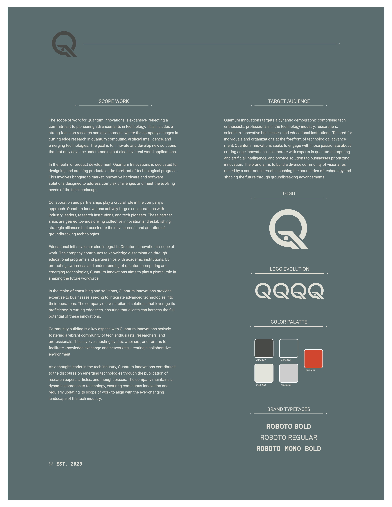

QUANTUM INNOVATIONS is a visionary project that envisions the future of technology, embracing groundbreaking advancements in quantum computing, artificial intelligence, and emerging technologies. The project, though fictional, embodies a commitment to pushing the boundaries of innovation and shaping the tech landscape of tomorrow. ChatGPT, a language model developed by OpenAI, played a pivotal role in the project by providing valuable insights, creative ideas, and assistance in crafting written content. Through collaborative interactions, ChatGPT contributed to the development of the project's branding, including the creation of a tagline, company description, and a ficitonal scope of work. Its ability to generate creative and coherent content proved instrumental in bringing the visionary concept of Quantum Innovations to life.


